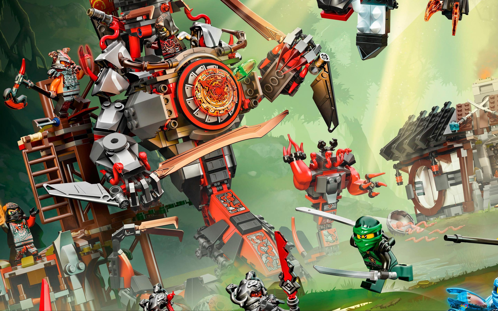
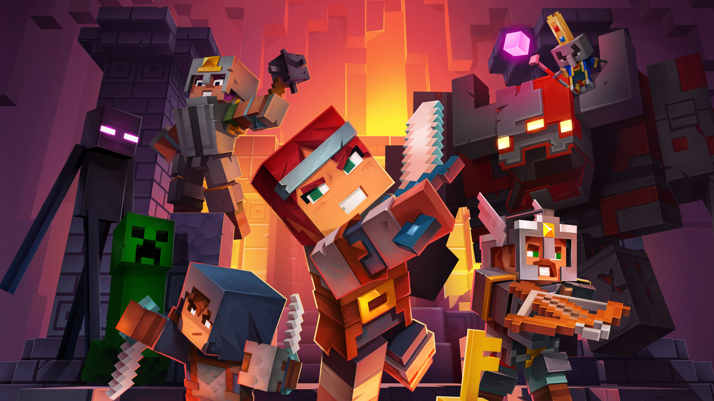

К литературе относятся авторские тексты (в том числе и анонимные, то есть такие, у которых автор по тем или иным причинам неизвестен, и коллективные, то есть написанные группой лиц — иногда довольно многочисленной, если речь идёт, к примеру, об энциклопедии, но всё-таки определённой). То, что текст принадлежит определённому автору, создан им, важно в данном случае не с юридической точки зрения (ср. авторское право) и не с психологической (автор как живой человек, сведения о котором читатель может попытаться извлечь из читаемого текста), а потому, что наличие у текста определённого автора обеспечивает этому тексту законченность: автор ставит последнюю точку, и после этого текст начинает существовать сам по себе. История культуры знает типы текстов, существующие по другим правилам, — например, фольклорные: из-за отсутствия авторства сам текст окончательно не закреплён, и тот, кто в очередной раз его пересказывает или переписывает, волен вносить в него изменения, порой довольно существенные. Те или иные записи такого текста могут быть связаны с именем писателя или учёного, осуществившего такую запись (например, «Народные русские сказки» Афанасьева), однако такая литературная фиксация нелитературного текста не отменяет возможности существования иных его версий, и автору такой записи принадлежит именно эта запись, а не сама сказка.
С предыдущим свойством связано и другое: к литературе относятся письменные тексты и не относятся устные. Устное творчество исторически предшествует письменному и прежде, в отличие от письменного, не поддавалось фиксации. Фольклор всегда был устным (вплоть до XIX века, когда начали появляться его письменные формы — например, девичьи альбомы). Современность знает, однако, переходные и пограничные случаи. Так, в национальных культурах, осуществивших в XX веке большой скачок в развитии, сохранялись или сохраняются сказители, занимающиеся устным (стихотворным, на грани песни) творчеством, — прежде такие песни уходили бы в фольклор и существовали в нём, изменяясь и развиваясь в устах других исполнителей, однако в новейшее время сочинения, например, Джамбула подвергались письменной фиксации сразу после своего создания и поэтому существуют в качестве литературных.
 Lego (ле́го, от дат. Leg-godt — «играй хорошо») — серии конструктора, представляющие собой наборы деталей для сборки и моделирования разнообразных предметов. Наборы Lego выпускает группа корпораций Lego Group, главный офис которой находится в Дании. Компания была основана в 1932 году; её название выглядит и звучит как лат. и итал. lego — «собираю», хотя первоначально она выпускала не конструкторы, а обычные деревянные игрушки. Полное название: «Ниндзяго. Мастера Кружитцу» («Ninjago. Masters of Spinjitzu»). Пилотный сезон — 4 серии, 1 сезон — «Год Змей» — 13 серий, 2 сезон — «Последняя битва» — 13 серий, 3 сезон — «Перезагрузка» — 8 серий, 4 сезон — «Турнир Стихий» — 10 серий, 5 сезон — «Одержимость» — 10 серий, 6 сезон — «Небесные границы» — 10 серий, Специальный 45-минутный эпизод — «День ушедших», 7 сезон — «Руки времени» — 10 серий, 8 сезон — «Сыновья Гармадона» — 10 серий, 9 сезон — «Загнанные» — 10 серий. Каждый из сезонов посвящён одному из команды Сэнсея Ву (кроме пилотного и четвёртого) — первый и второй сезоны посвящены Ллойду Гармадону (Зелёный ниндзя) и его противостоянию с родным отцом Лордом Гармадоном; третий — Зейну (Белый, а позже титановый ниндзя) и больше рассказывал о его жизни до основных событий мультфильма; четвёртый — Мастерам Стихий, которые прибыли на турнир Мастера Чена; пятый — Морро
 Minecraft (от англ. mine — «шахта; добывать» + craft — «ремесло; создавать») — компьютерная инди-игра в жанре песочницы, созданная шведским программистом Маркусом Перссоном и выпущенная его студией Mojang AB. В 2009 году Перссон опубликовал начальную версию игры; в конце 2011 года была выпущена стабильная версия для компьютеров Windows, Linux и macOS с распространением через официальный сайт. В последующие годы Minecraft была портирована на мобильные устройства под управлением Android, iOS и Windows Phone; на игровые приставки PlayStation 3, PlayStation 4, PlayStation Vita, Xbox 360, Xbox One, New Nintendo 3DS, Nintendo Switch и Wii U; и другие платформы. В 2014 году корпорация Microsoft приобрела права на Minecraft вместе со студией Mojang AB за 2,5 миллиарда долларов. В 2017 году была выпущена мультиплатформенная версия игры, объединившая различные версии для разных устройств[⇨]. Перссон написал Minecraft на языке программирования Java с использованием библиотеки графического вывода LWJGL, черпая идеи из таких игр, как Dwarf Fortress, Dungeon Keeper и Infiniminer (англ.)[⇨]. Minecraft даёт в распоряжение игрока процедурно генерируемый и изменяемый трёхмерный мир, полностью состоящий из кубов — его можно свободно перестраивать, создавая из этих кубов сложные сооружения — эта особенность делает игру схожей с различными конструкторами, такими как Lego.